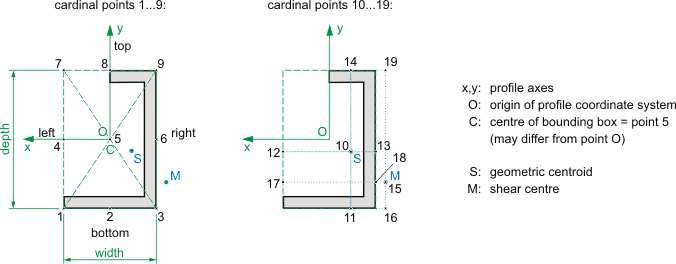
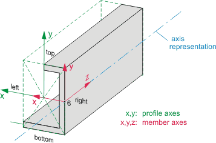

|
 EXPRESS-G diagram
EXPRESS-G diagramFormal Propositions:
| GreaterThanZero | : | Cardinal point reference shall be greater than zero. |
An IfcCardinalPointReference is an index reference to significant points of a section profile. This index is used to describe the spatial relationship between the section of a member and a reference axis of the same member.
HISTORY New Type in IFC4.
Indexes 1...9 refer to points at the bounding box of a profile. Indexes 10...19 refer to points defined by geometric centroid (usually centre of gravity) and shear centre, and their combinations with bounding box coordinates. In particular, the following index values are specified in this specification:
Other index values are possible but outside the scope of this specification.
Figure 325 illustrates cardinal point values.
 |
Figure 325 — Cardinal point values |
Figure 326 illustrates an example extrusion shape with arbitrary profile (IfcArbitraryClosedProfileDef), aligned "mid-depth right" on the member axis. The line of sight follows the extrusion direction Z which points into the drawing plane of above illustration. Hence, "left" is in the positive X direction of the IfcProfileDef. "Top" is in the positive Y direction of the IfcProfileDef.
 |
Figure 326 — Cardinal point extrusion |
XSD Specification:
<xs:simpleType name="IfcCardinalPointReference">EXPRESS Specification:
|
Formal Propositions:
| GreaterThanZero | : | Cardinal point reference shall be greater than zero. |
 Link to this page
Link to this page